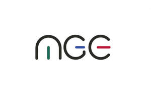

Trade Mark Journal No.2026/008 20 February 2026
UK00004327830 21 January 2026 (7,9,37,42)

All of the aforesaid goods and services relate to the deployment, operation, monitoring and lifecycle management of robotic systems and do not include the provision of domestic services, cleaning services, gardening services, healthcare services, personal care services, security enforcement services, or the manufacture of robotic apparatus.
- Class 7
- Robotic apparatus and automated machines; domestic and light-commercial robots; mobile robotic devices capable of navigation and physical interaction; parts and fittings for the aforesaid goods.
- Class 9
- Downloadable software and firmware for the operation, control, monitoring and management of robotic systems; artificial intelligence software for robotics control, task execution and optimisation; computer software platforms for supervising and managing robotic devices.
- Class 37
- Installation, configuration, maintenance, servicing, repair, replacement and decommissioning of robotic apparatus and automated machines; technical support services relating to the operation and upkeep of robotic systems; configuration, calibration and optimisation of robotic devices for domestic and light-commercial environments. .
- Class 42
- Design, development and provision of technology platforms for managing robotic systems; remote monitoring and supervision of robotic apparatus via digital and networked systems; software as a service (SaaS) for the control, orchestration, optimisation and performance oversight of robotic devices; technological consultancy and advisory services relating to robotics deployment, automation systems and managed robotic operations. .
Michael Gibbs